Erstellen von Bild-Annotationen
Bilder, oder so genannte Bild-Annotationen, können aus dem Medien-Repository per Drag and Drop bei gedrückter linker
Maustaste auf eine Szene im Szenengraphen gezogen werden.
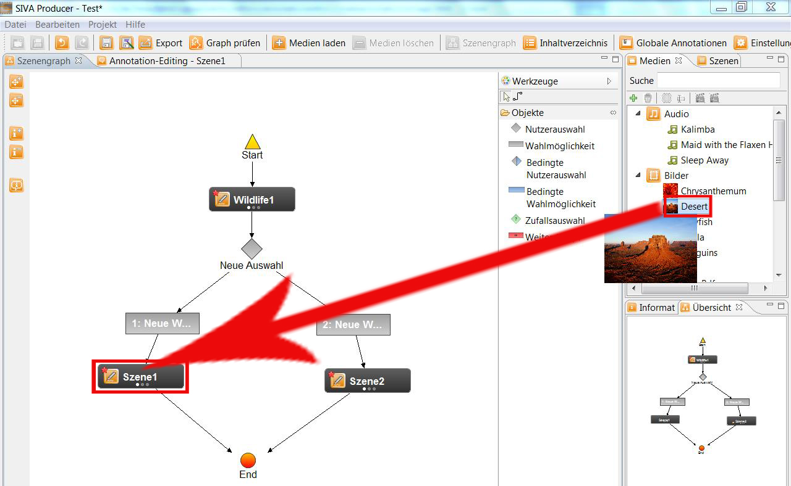
Im Folgenden öffnet sich ein Fenster in dem die Annotation mit einem Namen versehen werden kann. Wird kein Name
eingegeben, wird dieser automatisch vom Programm vergeben.
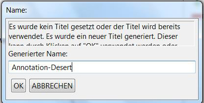
Um die Bildannotation bearbeiten zu können, muss man die Szene im Szenengraphen auf
anklicken. Nun öffnet sich ein neues Fenster.
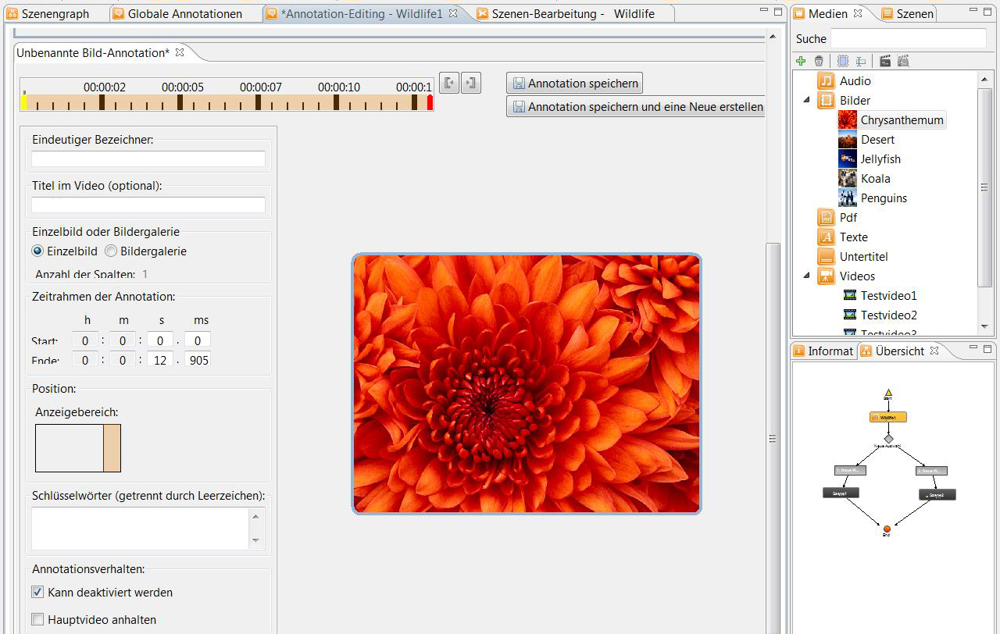
Start- und Endzeitpunkt der Wiedergabe
Danach können Start- und Endzeitpunkt der Wiedergabe festgelegt werden. Bei jeder Annotation müssen Start- und Endzeitpunkt
festgelegt werden.
Dies kann auf verschiedene Arten erfolgen:
- Eingabe von Start- und Endzeit in die entsprechenden Felder
- Verschieben des Start- und Endzeitpunktes auf der Zeitleiste
- Festlegen durch Klicks auf die Zeitleiste: Zum Festlegen des Startzeitpunktes wird
der Mauszeiger auf dem gewünschten Zeitpunkt auf der Zeitleiste positioniert und mit der
linken Maustaste geklickt. Das Festlegen des Endzeitpunktes wird auf die gleiche Art und
Weise durchgeführt, nur wird hier mit der rechen Maustaste geklickt.
Anzeigebereich
Außerdem kann die Stelle geändert werden, an der die Annotation später im fertigen Video angezeigt werden soll.
Dies kann in einem der Randbereiche oder in einem eigenen Fenster sein und kann mittels Mausklick ausgewählt werden.
- 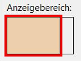
Ist die linke Fläche orange markiert, so erscheint die Annotation später direkt auf dem Bild.
- 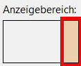
Ist die rechte Fläche eingefärbt, so kann die Annotation später am rechten Rand aufgeklappt werden.
- Hier kann die Leiste mit der Annotation auf- und zugeklappt werden.
Im fertigen Projekt könnte das wie folgt aussehen:
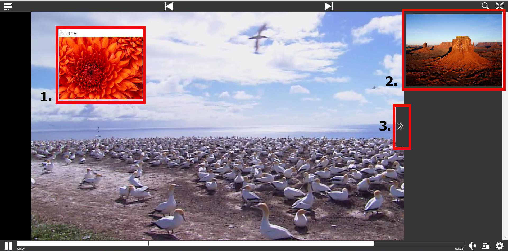
Um die Position der Annotation zu bestimmen kann man mittels Doppelklick auf den Anzeigebereich ein neues Fenster öffnen indem man
die Position und die Größe der Videoanntoation bestimmen kann.
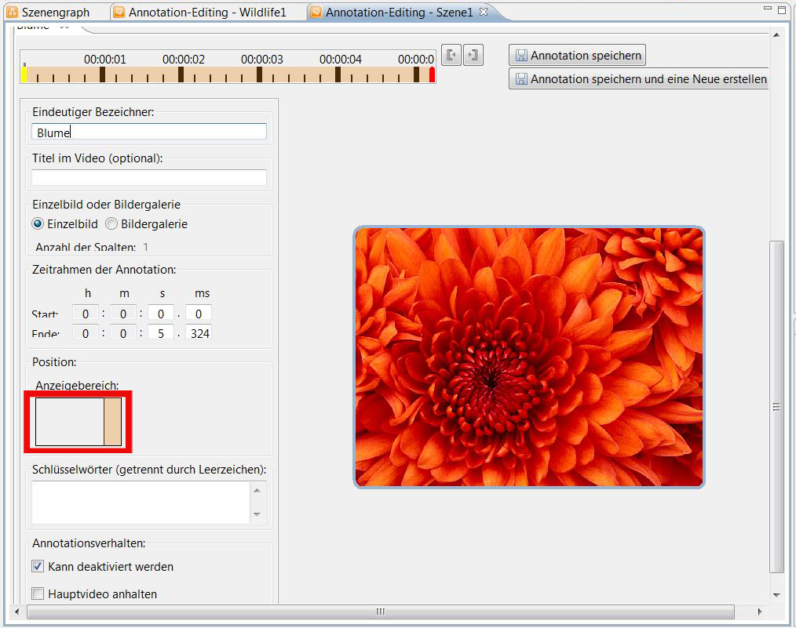
Hat man sich für eine Markierungs-Annotation entschieden, so erscheint zusätzlich noch die Auswahl des Symbols, das im
fertigen Projekt erscheinen soll. Hierbei kann zwischen Knopf, Ellypse und Polygon gewählt werden.
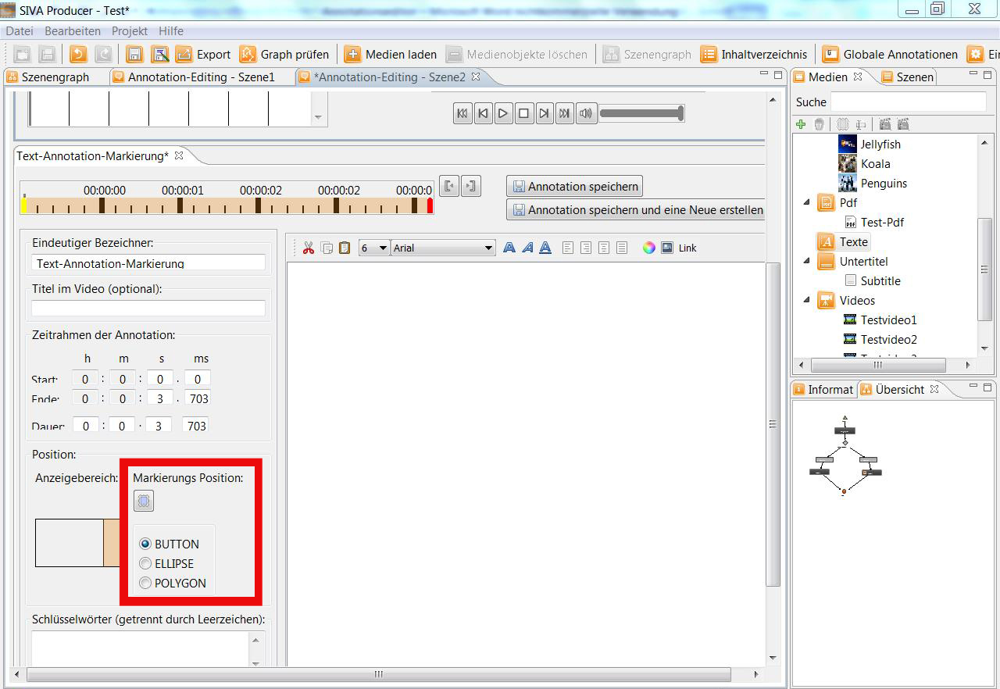
Speichern der Annotation
Wollen Sie die Annotation speichern und gleich darauf eine weitere erstellen, so klicken Sie auf
"Annotation speichern und eine Neue erstellen". Ansonsten kann die Annotation durch einen Klick auf den Speichern-Button
gespeichert werden.
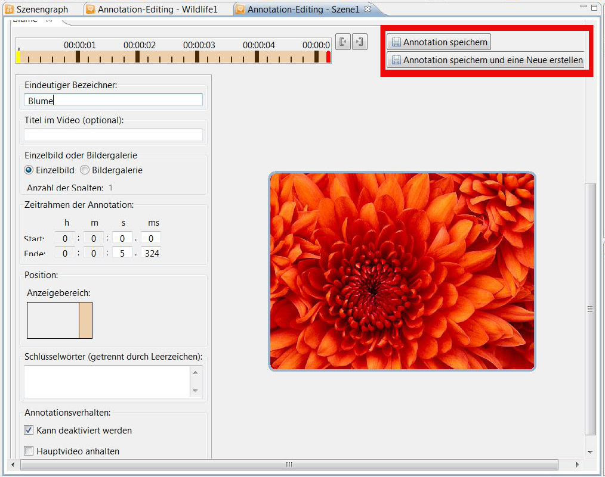
Ab sofort wird die Annotation im Zeitleistenbereich des oberen Fensters angezeigt.
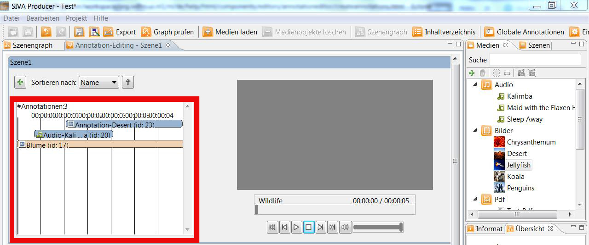
Löschen einer Bildannotation
Mittels Rechtsklick auf den Balken der die gewünschte Annotation anzeigt, kann eine Annotation auch wieder gelöscht werden.
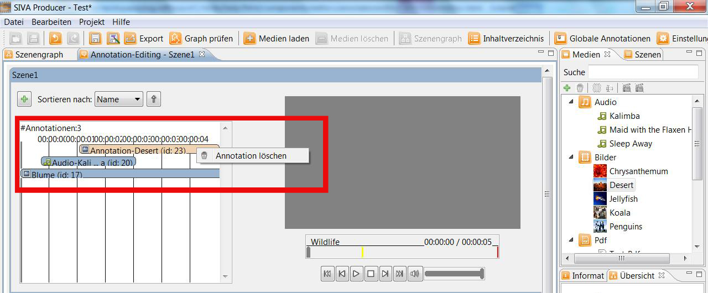
...